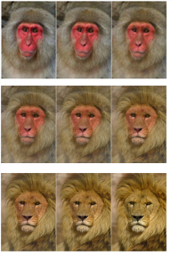

变形 是指将两个图像溶解在一起，使一个图像的主体看起来改变形状，并通过无缝过渡变成另一个图像的主体。变形可以很容易明显或非常微妙。一个引人注目的变形的例子是一个男人变成一个女人或者一个动物变成另一个，而从演员到他的特技演员的转变会导致一个更微妙的变形。
|
 |
|
一只猴子转动的图像
变成狮子的形象。 |
变形可能是一项耗时的任务，但是通过提前做好拍摄计划，变形会变得更容易。你想变形的物体的特征、位置和运动越相似，就越容易将它们变形在一起。然而，如果主题的位置和运动不匹配，您可以尝试重新定位和重新计时剪辑，然后将它们组合在一起。为此，请使用中描述的节点 转换元素 和 时间操作 。您还可以使用 Tracker 和 PlanarTracker 节点来跟踪要随时间变形的特征，或者在将它们组合在一起之前稳定剪辑。请参阅 变换扭曲 欲了解更多信息。
下面，我们首先讨论使用 GridWarp 节点的变形图像，然后使用 SplineWarp 节点。
|
|